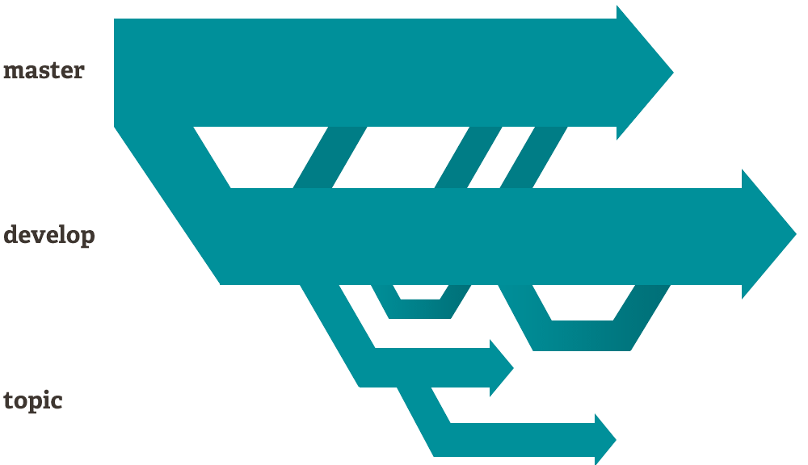
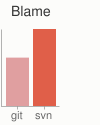

About
Branching and Merging
The Git feature that really makes it stand apart from nearly every other SCM out there is its branching model.
Git allows and encourages you to have multiple local branches that can be entirely independent of each other. The creation, merging, and deletion of those lines of development takes seconds.
This means that you can do things like:
- Frictionless Context Switching. Create a branch to try out an idea, commit a few times, switch back to where you branched from, apply a patch, switch back to where you are experimenting, and merge it in.
- Role-Based Codelines. Have a branch that always contains only what goes to production, another that you merge work into for testing, and several smaller ones for day to day work.
- Feature Based Workflow. Create new branches for each new feature you're working on so you can seamlessly switch back and forth between them, then delete each branch when that feature gets merged into your main line.
- Disposable Experimentation. Create a branch to experiment in, realize it's not going to work, and just delete it - abandoning the work—with nobody else ever seeing it (even if you've pushed other branches in the meantime).

Notably, when you push to a remote repository, you do not have to push all of your branches. You can choose to share just one of your branches, a few of them, or all of them. This tends to free people to try new ideas without worrying about having to plan how and when they are going to merge it in or share it with others.
There are ways to accomplish some of this with other systems, but the work involved is much more difficult and error-prone. Git makes this process incredibly easy and it changes the way most developers work when they learn it.
Small and Fast
Git is fast. With Git, nearly all operations are performed locally, giving it a huge speed advantage on centralized systems that constantly have to communicate with a server somewhere.
Git was built to work on the Linux kernel, meaning that it has had to effectively handle large repositories from day one. Git is written in C, reducing the overhead of runtimes associated with higher-level languages. Speed and performance has been a primary design goal of the Git from the start.
Benchmarks
Let's see how common operations stack up against Subversion, a common centralized version control system that is similar to CVS or Perforce. Smaller is faster.
|
|
|||||
|  |
For testing, large AWS instances were set up in the same availability zone. Git and SVN were installed on both machines, the Ruby repository was copied to both Git and SVN servers, and common operations were performed on both.
In some cases the commands don't match up exactly. Here, matching on the lowest common denominator was attempted. For example, the 'commit' tests also include the time to push for Git, though most of the time you would not actually be pushing to the server immediately after a commit where the two commands cannot be separated in SVN.
All of these times are in seconds.
| Operation | Git | SVN | ||
|---|---|---|---|---|
| Commit Files (A) | Add, commit and push 113 modified files (2164+, 2259-) | 0.64 | 2.60 | 4x |
| Commit Images (B) | Add, commit and push 1000 1k images | 1.53 | 24.70 | 16x |
| Diff Current | Diff 187 changed files (1664+, 4859-) against last commit | 0.25 | 1.09 | 4x |
| Diff Recent | Diff against 4 commits back (269 changed/3609+,6898-) | 0.25 | 3.99 | 16x |
| Diff Tags | Diff two tags against each other (v1.9.1.0/v1.9.3.0 ) | 1.17 | 83.57 | 71x |
| Log (50) | Log of the last 50 commits (19k of output) | 0.01 | 0.38 | 31x |
| Log (All) | Log of all commits (26,056 commits - 9.4M of output) | 0.52 | 169.20 | 325x |
| Log (File) | Log of the history of a single file (array.c - 483 revs) | 0.60 | 82.84 | 138x |
| Update | Pull of Commit A scenario (113 files changed, 2164+, 2259-) | 0.90 | 2.82 | 3x |
| Blame | Line annotation of a single file (array.c) | 1.91 | 3.04 | 1x |
Note that this is the best case scenario for SVN - a server with no load with an 80MB/s bandwidth connection to the client machine. Nearly all of these times would be even worse for SVN if that connection was slower, while many of the Git times would not be affected.
Clearly, in many of these common version control operations, Git is one or two orders of magnitude faster than SVN, even under ideal conditions for SVN.
One place where Git is slower is in the initial clone operation. Here, Git is downloading the entire history rather than only the latest version. As seen in the above charts, it's not considerably slower for an operation that is only performed once.
| Operation | Git* | Git | SVN | |
|---|---|---|---|---|
| Clone | Clone and shallow clone(*) in Git vs checkout in SVN | 21.0 | 107.5 | 14.0 |
| Size (M) | Size of total client side data and files after clone/checkout (in M) | 181.0 | 132.0 |
It's also interesting to note that the size of the data on the client side is very similar even though Git also has every version of every file for the entire history of the project. This illustrates how efficient it is at compressing and storing data on the client side.
Distributed
One of the nicest features of any Distributed SCM, Git included, is that it's distributed. This means that instead of doing a "checkout" of the current tip of the source code, you do a "clone" of the entire repository.
Multiple Backups
This means that even if you're using a centralized workflow, every user essentially has a full backup of the main server. Each of these copies could be pushed up to replace the main server in the event of a crash or corruption. In effect, there is no single point of failure with Git unless there is only a single copy of the repository.
Any Workflow
Because of Git's distributed nature and superb branching system, an almost endless number of workflows can be implemented with relative ease.
Subversion-Style Workflow
A centralized workflow is very common, especially from people transitioning from a centralized system. Git will not allow you to push if someone has pushed since the last time you fetched, so a centralized model where all developers push to the same server works just fine.

Integration Manager Workflow
Another common Git workflow involves an integration manager — a single person who commits to the 'blessed' repository. A number of developers then clone from that repository, push to their own independent repositories, and ask the integrator to pull in their changes. This is the type of development model often seen with open source or GitHub repositories.

Dictator and Lieutenants Workflow
For more massive projects, a development workflow like that of the Linux kernel is often effective. In this model, some people ('lieutenants') are in charge of a specific subsystem of the project and they merge in all changes related to that subsystem. Another integrator (the 'dictator') can pull changes from only his/her lieutenants and then push to the 'blessed' repository that everyone then clones from again.

Data Assurance
The data model that Git uses ensures the cryptographic integrity of every bit of your project. Every file and commit is checksummed and retrieved by its checksum when checked back out. It's impossible to get anything out of Git other than the exact bits you put in.
It is also impossible to change any file, date, commit message, or any other data in a Git repository without changing the IDs of everything after it. This means that if you have a commit ID, you can be assured not only that your project is exactly the same as when it was committed, but that nothing in its history was changed.
Most centralized version control systems provide no such integrity by default.
Staging Area
Unlike the other systems, Git has something called the "staging area" or "index". This is an intermediate area where commits can be formatted and reviewed before completing the commit.
One thing that sets Git apart from other tools is that it's possible to quickly stage some of your files and commit them without committing all of the other modified files in your working directory or having to list them on the command line during the commit.

This allows you to stage only portions of a modified file. Gone are the days of making two logically unrelated modifications to a file before you realized that you forgot to commit one of them. Now you can just stage the change you need for the current commit and stage the other change for the next commit. This feature scales up to as many different changes to your file as needed.
Of course, Git also makes it easy to ignore this feature if you don't want that kind of control — just add a '-a' to your commit command in order to add all changes to all files to the staging area.

Free and Open Source
Git is released under the GNU General Public License version 2.0, which is an open source license. The Git project chose to use GPLv2 to guarantee your freedom to share and change free software---to make sure the software is free for all its users.
However, we do restrict the use of the term "Git" and the logos to avoid confusion. Please see our trademark policy for details.